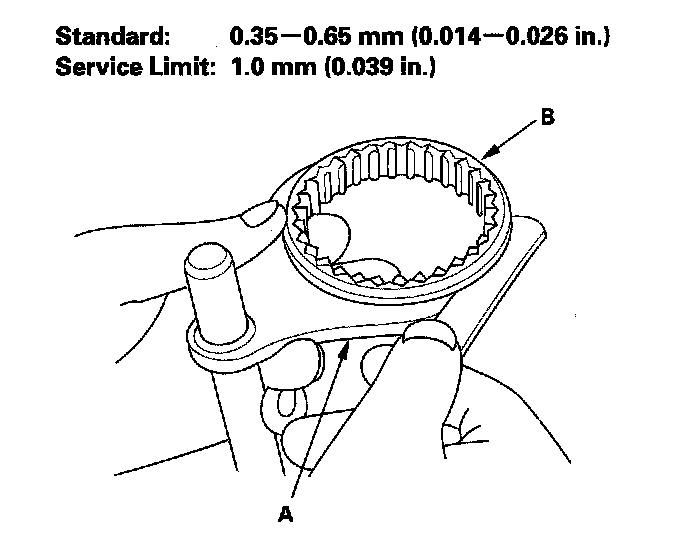
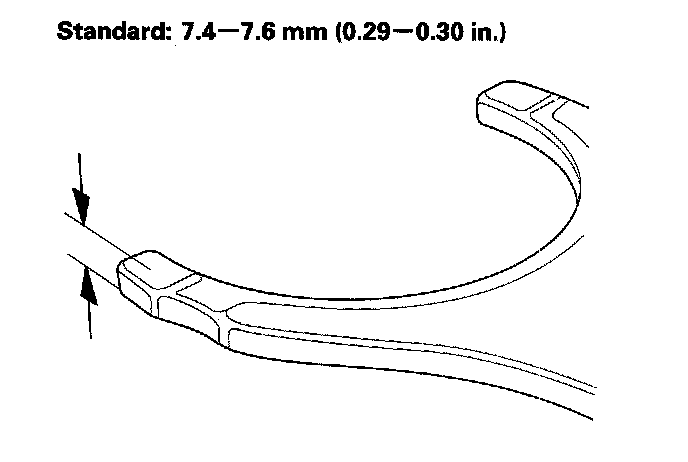
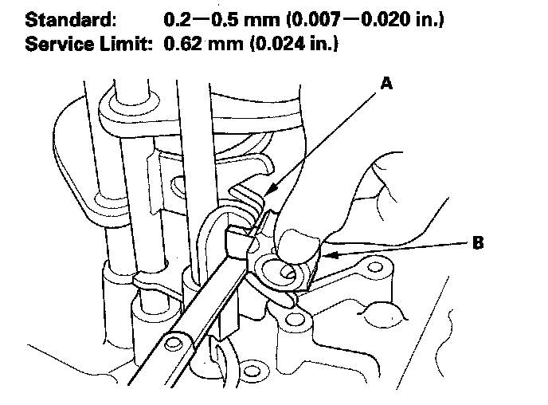
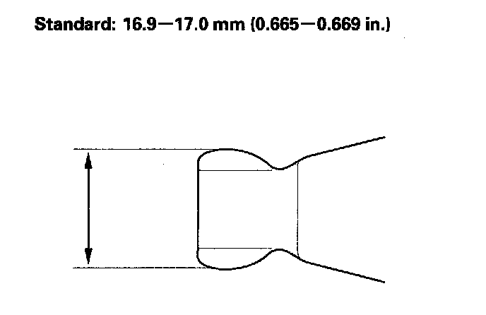

Shift Fork Clearance Inspection
Shift Fork Clearance InspectionNOTE: The synchro sleeve and synchro hub should be replaced as a set.
1. Measure clearance between each shift fork (A) and its matching synchro sleeve (B). If the clearance exceeds the service limit, go to step 2.

2. Measure thickness of the shift fork fingers.
^ If the thickness is not within the standard, replace the shift fork.
^ If the thickness is within the standard, replace the synchro sleeve and synchro hub as a set.
^ If one arm of the shift fork shows more wear than others, the fork may be bent and needs to be replaced.

3. Measure clearance between the shift fork (A) and the shift arm (B). If the clearance exceeds the service limit, go to step 4.

4. Measure width of the shift arm.
^ If the width is not within the standard, replace the shift arm.
^ If the width is within the standard, replace the shift fork or reverse shift piece.
